William S. Harlan
Landmark Graphics; 1805 Shea Center Drive
March 2004
Highlands Ranch, CO 80129, USA
In my geophysical work, I rely heavily upon a generalized inversion algorithm called Gauss-Newton optimization. The Gauss-Newton method minimizes objective functions that can be iteratively approximated by quadratics. This approach is particularly appropriate for least-squares inversions of moderately non-linear transforms. The package also contains code for conjugate-gradient and line-search optimizations.
Over two decades I have implemented this package four times, in four different programming languages. Every feature of this package has been motivated by practical application. This particular Java version is only a few years old, but I have already used it for a dozen or more distinct inversion problems. I find no preexisting package so suitable for typical geophysical inversion problems.
The abstraction is designed to minimize the burden of supporting new models, data, and transforms. Unlike many approaches, we will not be required to construct and invert large linear matrices. We only need to be able to perform transformations on specific models and datasets. The inversion algorithm need not know any of the implementation details of those models and transformations.
For each new problem, I must implement two distinct Java interfaces. The data and model are be encapsulated by two implementations of the Vect interface. The simulation to be inverted must be encapsulated by Transform if non-linear, or by LinearTransform if linear. Finally, the model that best explains a particular dataset is inverted by one of the GaussNewtonSolver.solve methods. Any constraints or conditioning can be implemented with one of these interfaces.
Our optimization algorithm will be defined only in terms of general vector spaces and operators on vectors. Our abstractions of model and data must first support these operations. Notice that this use of the word vector is not limited to one-dimensional arrays. See Luenberger's [5] ``Optimization by Vector Space Methods.''
Let us write a specific dataset as a vector
 and a model as a vector 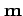. Each of
these vectors belong to a separate vector
space, with different dimensionality, norms,
and implementations. Both must support the
same vector operations.
and a model as a vector 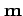. Each of
these vectors belong to a separate vector
space, with different dimensionality, norms,
and implementations. Both must support the
same vector operations.
First, a vector can be scaled by a constant
and added to another vector, to produce
another valid vector. I.e, if
 and
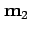 are two separate models, and 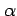
and 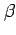 are scale factors, then
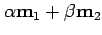 is also a model vector.
This vector scaling and addition must be
commutative, associative, and distributive.
Here is the method that must be defined by
the Java interface for an abstract vector.
and
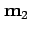 are two separate models, and 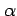
and 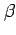 are scale factors, then
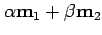 is also a model vector.
This vector scaling and addition must be
commutative, associative, and distributive.
Here is the method that must be defined by
the Java interface for an abstract vector.
public interface Vect extends VectConst {
/** Add a scaled version of another vector to a scaled version of this
vector.
@param scaleThis Multiply this vector by this scalar before adding.
@param scaleOther Multiply other vector by this scalar before adding.
@param other The other vector to be multiplied.
*/
public void add(double scaleThis, double scaleOther, VectConst other) ;
...
}
We could have defined methods to scale and add separately, but this method offered the best compromise between efficiency and simplicity. Your implementation can optimize special cases where a scale factor is 0 or 1.
VectConst is an interface that supports only immutable operations. Vect extends VectConst and add methods that modify the state of the vector.
Next we define an dot product (or inner product) for a normed vector space. In vector notation, any two vectors from the same space can be dotted to produce a scalar: 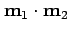. This dot product is usually a simple Cartesian dot product of all internal parameters. Any non-Cartesian distances are separated into a separate ``inverse covariance'' operator. The magnitude or norm of a vector is given by 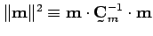 The significance of this covariance will be clearer once we define an objective function.
Here are the appropriate Java operations:
public interface VectConst extends Cloneable, java.io.Serializable {
/** Return the Cartesian dot product of this vector with another
vector (not including any inverse covariance).
@param other The vector to be dotted.
@return The dot product.
*/
public double dot(VectConst other);
/** This is the dot product of the vector with itself premultiplied
by the inverse covariance. Equivalently,
Vect vect = (Vect) this.clone();
vect.multiplyInverseCovariance();
return this.dot(vect);
*/
public double magnitude() ;
...
}
public interface Vect extends VectConst {
...
/** Optionally multiply a vector by the inverse covariance matrix.
Also called preconditioning.
A method that does nothing is equivalent to an identity.
*/
public void multiplyInverseCovariance();
...
}
Notice that all VectConst extends Cloneable and Serializable. Copies will frequently be necessary. The optimization will minimize the number of vectors instantiated simultaneously, to reduce memory requirements, even if it requires repeating some less expensive operations.
The VectConst.magnitude() method is redundant, but it is necessary to avoid creating extra copies of the model. If your vectors are small, you can use a simple implementation with a clone, as shown in the comment.
Serializable is not strictly necessary, but often highly desirable with creating collections of vectors. For example, you can use the wrapper class VectCache to create a collection of Vect's that are cached to disk. VectCache is itself a Vect. You may also want to implement a transform that distributes work to other nodes. If neither of these situations are the case, you need not check the default serialization.
Use the static method VectUtil.test(VectConst vect) to test your implementation of all these methods.
We have now covered all mandatory operations required for our generalized inversion. Some optional operations such as hard constraints and conditioning are also supported and will be discussed later.
Next we need an abstraction of the
calculations that simulate our data from a
particular model. The inversion algorithm is
not interested in implementation details, but
only in the application of the transform. If
our data are encapsulated as a vector  and our model as , then we can write our
simulation as
and our model as , then we can write our
simulation as
 .
.
With just a forward transform (simulation), no inversion could efficiently estimate the model that best explains a particular dataset. The inversion would only be able to try different random models and compare the results, without any suggestion on how best to modify the model. Our abstraction of a transform requires two more operations.
First, we must know how a small perturbation
of a model affects the data. If we add a
small perturbation
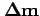 to a reference
model
 , then we would like to know the
resulting perturbation to the data
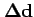.
We must be able to implement a linear
transform
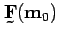 so that
, then we would like to know the
resulting perturbation to the data
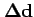.
We must be able to implement a linear
transform
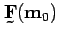 so that
| (1) |
The operator is linear if the following equality holds
| (2) | |||
I always attempt to parameterize my model so that this linearization is as good as possible. The better the linearization, the better the convergence.
Finally, we will need a transpose
 of the linear transform. A transpose
is defined by the equality
of the linear transform. A transpose
is defined by the equality
| (3) |
The transpose is known as ``back-projection'' in tomography and as ``back-propagation'' in neural networks.
In addition to vectors for the data and model, our generic inversion will require us to implement an interface for this transform. In Java, the three essential operations look like
public interface Transform {
/** Non-linear transform: data = f(model).
@param data Output. Initial values are ignored.
@param model Input. Unchanged.
*/
public void forwardNonlinear(Vect data, VectConst model);
/** A linearized approximation of the forward transform
for a small perturbation (model) to a reference model (modelReference).
The output data must be a linear function of the model perturbation.
Linearized transform:
data = F model ~= f(model + modelReference) - f(modelReference)
@param data Output. Initial values are ignored.
@param model Perturbation to reference model.
@param modelReference The reference model for the linearized operator.
*/
public void forwardLinearized(Vect data, VectConst model,
VectConst modelReference);
/** The transpose of the linearized approximation of the forward transform
for a small perturbation (model) to a reference model (modelReference):
model = F' data. Add the result to the existing model.
@param data Input for transpose operation.
@param model Output. The transpose will be added to this vector.
@param modelReference The reference model for the linearized operator.
*/
public void addTranspose(VectConst data, Vect model,
VectConst modelReference);
...
}
In addition, there is an optional inverse Hessian method that can be used to speed convergence. We will discuss this method later.
Use the static method VectUtil.getTransposePrecision to ensure that your transpose satisfies the dot-product definition.
We now have all the properties required for a generalized inversion of a transform to obtain a model vector that best explains a data vector.
The damped least squares objective function behaves well for geophysical problems that are both over-determined and under-determined. When over-determined, errors in data will be distributed as uniformly as possible. When under-determined, components of the model will be suppressed if they do not improve the fit with data significantly. For motivation of damped least squares as a stochastic optimization see Menke [7], Jaynes [4], or Box and Tiao [1].
We assume that our data  are a
non-linear function
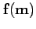 of our model
. The noise vector 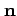 will be any
component of our data that we cannot explain:
are a
non-linear function
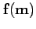 of our model
. The noise vector 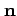 will be any
component of our data that we cannot explain:
| 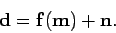 | (4) |
Assume the noise and model are sampled from separate Gaussian distributions. The model that best explains a specific dataset is the one that minimizes this objective function.
The covariance matrices describe expected correlations between each Gaussian parameter in a vector. (Assume without loss of generality that the mean of the model and noise are zero. We can adjust our transform accordingly.)
This objective function will be easier to optimize if covariances are as diagonal as possible. I discuss such manipulation of the quadratic objective function in the paper ``Regularization by Model Parameterization'' [3]. I strongly recommend you examine this paper as well.
You need only damp the magnitude of the model slightly to assure a stable inverse. If your noise and model samples are completely stationary and independent, your Vect.multiplyInverseHessian() methods need only multiply by a scalar. I first anticipate reasonable physical magnitudes for the noise and for the model. If both noise and model attain their most reasonable values, then the two squared penalty terms should be equal in the objective function (5). Instead I adjust covariances so that model parameters can attain magnitudes 10 or 100 times their most reasonable values before the two terms are equal. This minimal damping is sufficient to guarantee a stable inverse without distorting the solution unnecessarily. (Note that both covariances can be multiplied by the same arbitrary scale factor without affecting the final solution.)
A Gauss-Newton algorithm iteratively approximates the objective function as a quadratic function of a perturbation of the model:
To minimize a completely quadratic
objective function, we can use the
well-understood conjugate-gradient algorithm
(see Gill et al [2] or Luenberger
[6]). The best perturbation of
the model
is is actually a linear
function of the remaining error in the data
 .
.
We might be tempted simply to add the
perturbation
to the reference model
 , but non-linearity in the transform
can cause divergence. Instead the algorithm
solves for a single scale factor to
multiply the perturbation
before
addition.
, but non-linearity in the transform
can cause divergence. Instead the algorithm
solves for a single scale factor to
multiply the perturbation
before
addition.
| (7) |
Often in geophysical problems, the original objective function (5) has less curvature than the quadratic approximation. In such a case, the estimated scale factor can be expected to be less than one.
To search for a single scalar in a known range, the line-search algorithm (ScalarSolver) minimizes the number of evaluations of the original objective function. I use a line-search that searches for a parabolic minimum with hyper-linear convergence. If convergence is poor because of strong non-linearity, the search resorts to a golden section with at least linear convergence.
The Vect and Transform interfaces include some optional methods to apply constraints and to improve convergence.
Often our nonlinearity is due entirely to hard constraints upon our model. For example, seismic velocities may be constrained to a strict range of positive values.
We also often have an partial inverse of our forward transform, perhaps from an analytic derivation that assumes our data are more evenly sampled. Or we may know that a forward and transpose operation amplifies certain components of the data. We should be able to use such information to improve convergence.
If you have a simple hard constraint, such as an inequality, define it in the method Vect.constrain(). An empty implementation does nothing. This method does not affect the conjugate-gradient optimization of the quadratic approximation. Instead this method is applied after adding a perturbation to the reference model. The method is called repeatedly during the line search for a best scale factor for the perturbation.
You may instead wish to limit the degrees of freedom available to an update, without similarly constraining your reference model. Your model and your updates need not share the same implementations of the Vect interface. You need only convert from one to the other by implementing the Vect.project method, which has the same arguments as the Vect.add method.
Most users of prepackaged inversions are
familiar with ``preconditioning'' as a method
of improving convergence. Instead of
attempting to invert a transform like
 , one inverts a related problem
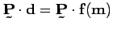. The
preconditioning transform
, one inverts a related problem
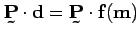. The
preconditioning transform  amplifies
components of the data that should be
inverted first. Unfortunately, solving this
problem is not the same as solving our
original problem. Our final distribution of
errors will be different. We have
effectively defined a new dataset and a new
transform, which of course we can do at any
time without help from the inversion code.
amplifies
components of the data that should be
inverted first. Unfortunately, solving this
problem is not the same as solving our
original problem. Our final distribution of
errors will be different. We have
effectively defined a new dataset and a new
transform, which of course we can do at any
time without help from the inversion code.
As I mentioned before, my favorite method of stabilizing and improving convergence is a reparameterization of the model [3]. This approach simplifies and diagonalizes the model covariance operator.
Even after reparameterization, we may want to encourage certain parts of the model to be updated first. We may know that our forward transform has greater or lesser sensitivity to certain components of our model. Both the Vect and Transform interfaces allow us to add ``post-conditioning'' that takes advantage of such knowledge.
The Vect interface has an optional method Vect.postCondition(). If you define an empty implementation for this method, you will receive the default behavior, which should be fine. For better convergence, this method can apply a linear filter to the data that enhances components that should be optimized first, and suppresses components of lesser importance. This is the last operation applied to a model gradient before use in the conjugate-gradient algorithm. Your objective function is not modified, but your perturbations of that model will improve. You should be able to obtain a better model in fewer iterations.
Alternatively, you may have already have an
approximate linear inverse for the linearized
forward transform. We call this inverse the
``inverse Hessian'' because the Hessian is
the tensor curvature of the quadratic
approximation. For a given linearization
, the inverse Hessian
 should be the partial inverse
should be the partial inverse
| 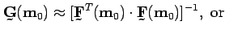 | (8) | ||
| (9) |
As long as the product
 is more diagonal, or better
balanced along the diagonal, this inverse
Hessian will improve convergence. In
tomography such a filter is called ``hit
count balancing'' and in slant-stacks a ``rho
filter.'' Again, this operator implies no
change in the objective function, just in the
way we perturb our solution.
is more diagonal, or better
balanced along the diagonal, this inverse
Hessian will improve convergence. In
tomography such a filter is called ``hit
count balancing'' and in slant-stacks a ``rho
filter.'' Again, this operator implies no
change in the objective function, just in the
way we perturb our solution.
One last optional operation is useful for very noisy data: Transform.adjustRobustErrors(Vect dataError). This operation does imply a change to our objective function, though a minor one. This method will be passed an estimate of the errors in fitting the data -- the original data minus the simulation of the data with the best current model. Your method may detect that a small subset of your data has exceptionally large errors. Rather than allow a few bad data to distort your result, your method can clip or scale back these errors. Do not change the overall variance of the errors more than necessary. (If you are familiar with L1 optimization, you can also use this method to divide all errors by their previous magnitudes, to iteratively approximate a median fit to your data.)
Most everything unique about your inversion problem is described by your implementation of the Vect and Transform interfaces. For an inversion with all features described previously, you should call this static method of GaussNewtonSolver:
public class GaussNewtonSolver {
public static Vect solve (VectConst data,
VectConst referenceModel,
VectConst perturbModel, // optional
Transform transform,
boolean dampOnlyPerturbation,
int conjugateGradIterations,
int lineSearchIterations,
int linearizationIterations,
double lineSearchError,
Monitor monitor) // optional
...
}
The return value of this method is the model that best explains an instance of your data, passed as the first argument data.
The second argument referenceModel is the model that should be used as the initial guess of your solution. Often you can initialize this model to a zero magnitude. The returned solution will be always be a revised instance of this reference model.
If you want to perturb the reference model with an instance of a different class, then provide a perturbModel. If perturbModel is null, then instances of the reference model will be used for perturbations. The project method of the reference model should accept the perturbation as an argument. Perturbations should have fewer degrees of freedom than the reference model, because projection will lose any additional degrees of freedom. The initial state of this vector is ignored.
Your Transform should be able to model your data from the reference model with forwardNonlinear, and should be able to use either model as perturbations in the forwardLinearized and addTranspose methods.
If dampOnlyPerturbations is true, then the objective function will only minimize differences between your reference model and your new model. Otherwise, the absolute Vect.magnitude() of your model will be minimized.
Remaining parameters let you control how much computational effort you are willing to expend on the solution.
Each quadratic approximation should be minimized with at least a few iterations of conjugate-gradients. The parameter conjugateGradIterations should have a minimum of 3 iterations and a typical value of 4 or 5. If your transform is relatively inexpensive, then indulge in a few more. Each iteration results in an additional evaluation of the linearized forward and transpose transform. If this parameter has a value of 1, then your optimization will be equivalent to non-linear steepest-descent, which is notorious for poor convergence when the Hessian has a poorly balanced diagonal.
To scale the conjugate-gradient perturbation, we must perform a line search. The parameter lineSearchIterations controls the maximum number of evaluations of the non-linear forward transform to be used for this search. Because of the hyper-linear convergence, you can expect fairly good optimization of this scale factor with as few as 12 iterations. Typically I prefer a safer value of 20, beyond which you are unlikely to see an improvement. If you specify 0, then you will get a default scale factor of 1. Such a choice might converge well on a transform that was almost entirely linear to begin with. A value of 1 might be a good choice if the your only non-linearity results from hard constraints on your model from the Vect.constrain() method.
The number of iterations actually used for the line search depends on the required precision of the scale factor. The parameter lineSearchError is the acceptable fractional error in the estimated scale factor. I typically use a value of 0.001 or smaller.
The parameter linearizationIterations controls the outermost loop of reapproximating the objective function as a quadratic. Each of these iterations multiplies the number of conjugate-gradient and line search evaluations required. The number of quadratic approximations should be fairly small, unless your transform is strongly non-linear. I typically choose a minimum value of 3 unless I can afford more.
If you wish to save the results of each linearized iteration, then you can construct your own loop: set linearizationIterations to 1 and use the solution from each iteration as the reference model for the next. Managing your own outer loop will not increase the computational cost significantly.
To get a good feel for the difficulty of your problem, see if increasing the number of iterations or precision improves your solution significantly.
To track the progress of your inversion, you can optionally pass a non-null implementation of the Monitor interface. This interface defines a single method public void report(double fraction) which will be called regularly with the current fraction of work done. Values range from 0 at the beginning to 1 when all work is done. To print the progress to a java Logger, use the existing implementation in LogMonitor.
If your transform is entirely linear, you need only use a conjugate-gradient solver. You can implement the simpler LinearTransform interface that contains one instead of two forward transforms. Use this solver instead:
public class GaussNewtonSolver {
...
public static Vect solve (VectConst data,
VectConst referenceModel,
LinearTransform linearTransform,
boolean dampOnlyPerturbation,
int conjugateGradIterations,
Monitor monitor)
...
}
All other parameters have the same meaning as before. No linearization or line-search is necessary, so the corresponding parameters have disappeared.
The conjugate-gradient algorithm itself is contained in the QuadraticSolver class. To use this class directly, you must construct the normal equations of your least-squares problem, including a Hessian operator. For inversion problems, this form is much less convenient than the GaussNewtonSolver.solve method above. But if your objective function is already expressed as a simple quadratic, then you might want to use this lower-level class.
You might also have occasion to estimate a single parameter that minimizes some arbitrary function. You can use the ScalarSolver class directly by implementing the single method in the ScalarSolver.Function interface. This is the same algorithm used internally by the Gauss-Newton algorithm for the line-search of a scale factor.
I have described all methods available in the interfaces available for solving a generalized least-squares inversion problem. Methods exist for testing the internal consistency of your implementations. I think you will find a large number of inversion problems can be solved by this framework. When the simulation is too non-linear for this framework, it is also likely to be difficult for any framework to optimize well. You would be well advised to attempt a reparameterization of your model.